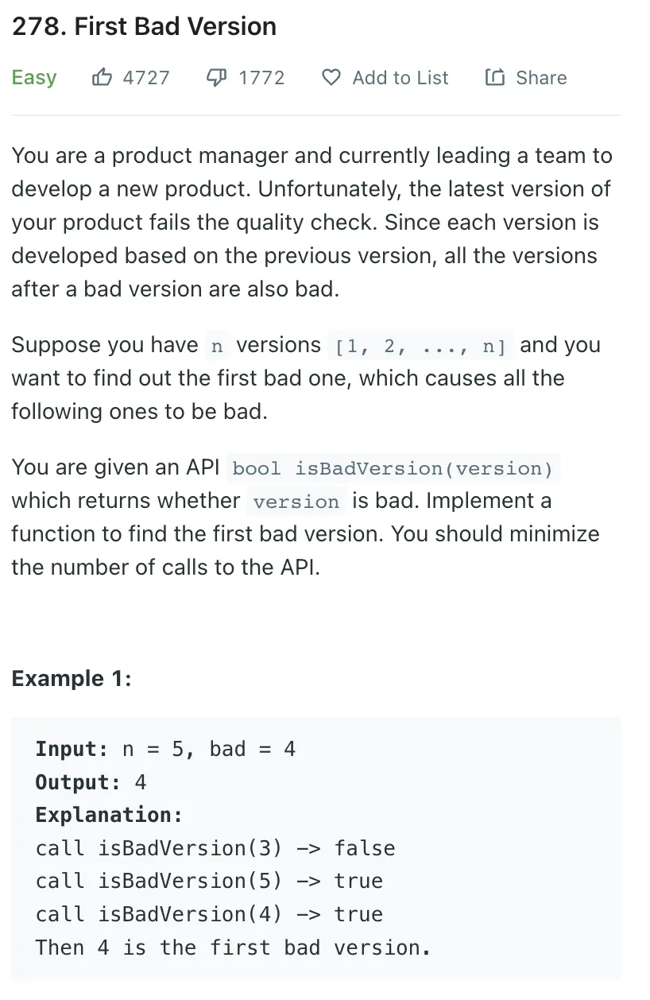
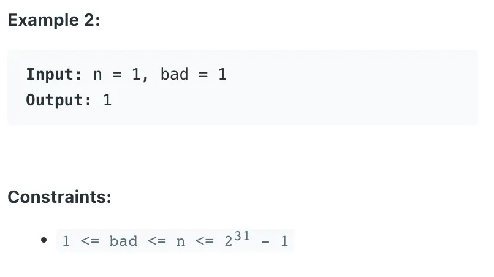

278. First Bad Version
考過的公司：Asked by: Amazon, Google
Question


✍🏽 My Solution
Runtime: 15 ms, faster than 77.41% of Java online submissions for First Bad Version.
Memory Usage: 40.7 MB, less than 59.78% of Java online submissions for First Bad Version.
/* The isBadVersion API is defined in the parent class VersionControl.
boolean isBadVersion(int version); */
public class Solution extends VersionControl {
public int firstBadVersion(int n) {
int low = 1;
int high = n;
while (low < high) {
int mid = low + (high-low)/2;
if (isBadVersion(mid)) {
high = mid;
} else {
low = mid + 1;
}
}
// 此时 left == right，区间缩为一个点，即为答案
return low;
}
}
🧠 Thought Process
- Why did I choose this particular implementation?
- 注意到一个性质：当一个版本为正确版本，则该版本之前的所有版本均为正确版本；当一个版本为错误版本，则该版本之后的所有版本均为错误版本。我们可以利用这个性质进行二分查找。
- 如果是正確版本：答案在區間[mid+1, right]
- 如果是錯誤版本：答案在區間[left, mid]
- What is the time/space complexity of my solution? How do I know?
- time: O(logn)
- space: O(1)
- What mistakes did I make?
- 完全想不到解法